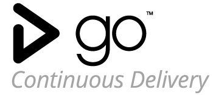

MEAN Stack
A popular fullstack Javascript methodology that is used to construct robust web sites and dynamic web applications. It has gained much momentum as it takes advantage of the collection of powerful technologies (Mongo, Express, Angular, and Node).

React Native
Facebook's open-sourced framework used in bridging the gap between mobile development and traditional web development. React Native enables the developer to build seamless applications on native platforms by using experience based on Javascript and the React framework.

Go Continuous Delivery
A product introduced by ThoughtWorks Studios, Go is a continuous delivery tool that helps create and manage automated deployment pipelines and supports the process of building, testing, and releasing reliable code.